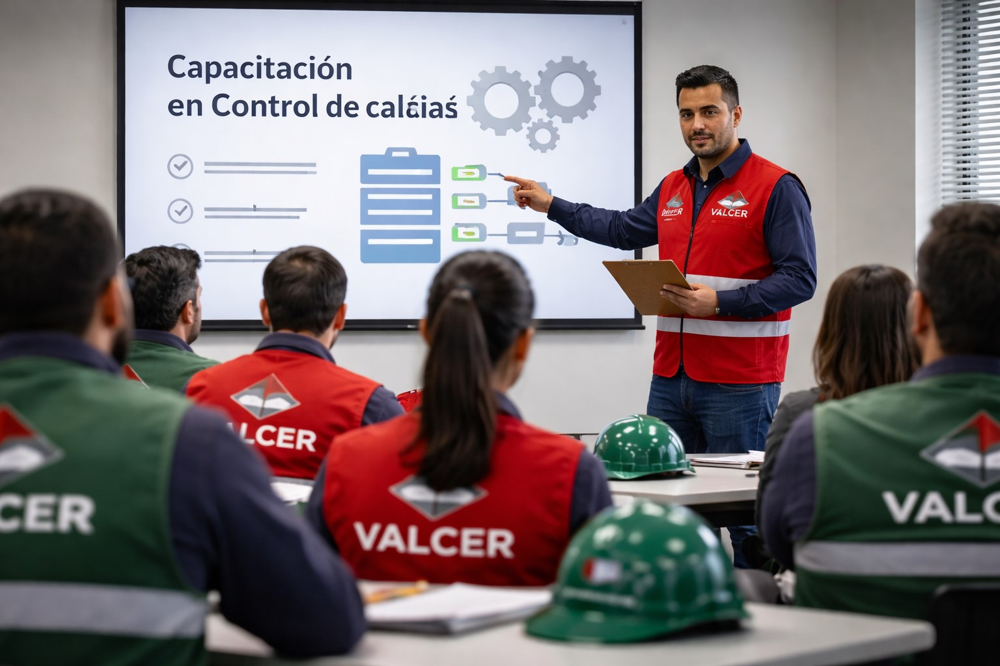
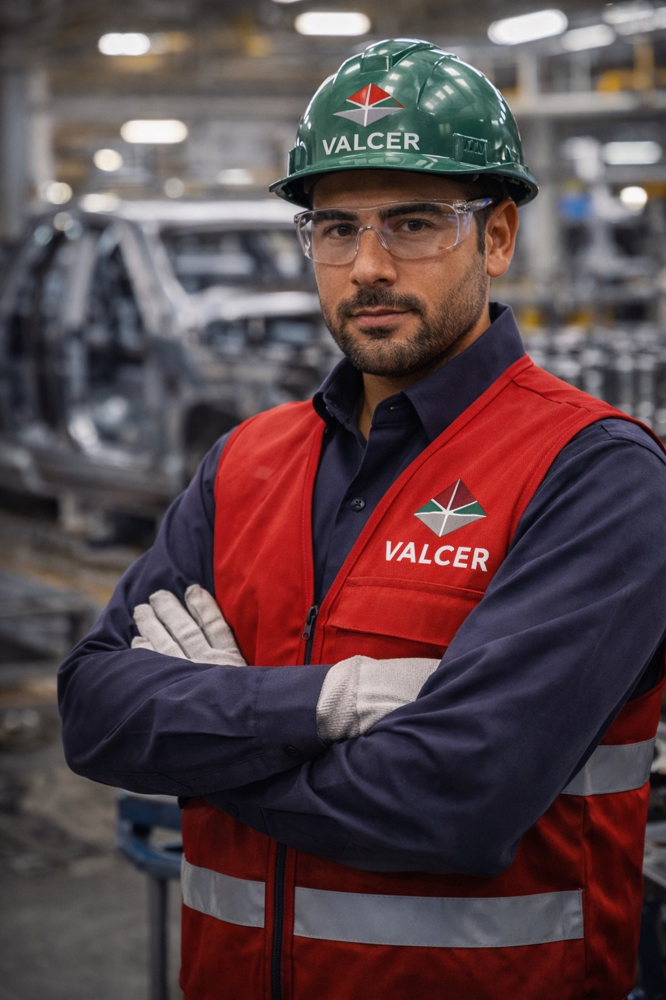
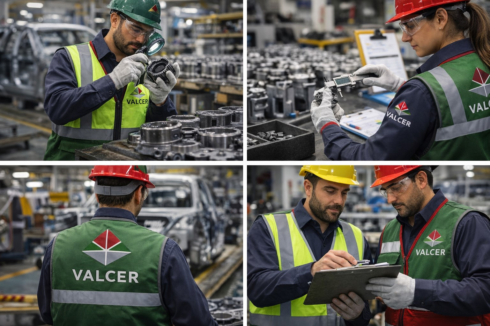
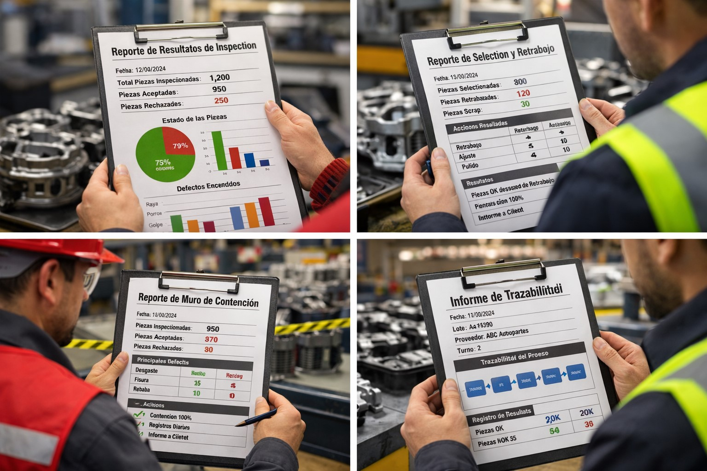

VALCER
Tercería de Calidad Automotriz
Tercería de Calidad Automotriz
Inspección, selección, retrabajo y muros de contención con respuesta inmediata en Puebla y Tlaxcala
Solicitar servicioVALCER nace con el objetivo de ofrecer soluciones especializadas en tercería de calidad dentro del sector automotriz. Nuestra experiencia se ha enfocado en la inspección, contención y retrabajo de piezas, asegurando que nuestros clientes cumplan con estándares internacionales y mantengan la continuidad operativa.
Evaluación visual y dimensional bajo estándares automotrices, garantizando cumplimiento de especificaciones.
Clasificación de piezas conformes y no conformes, evitando riesgos en línea de producción.
Corrección de defectos para recuperación de material y reducción de scrap.
Implementación inmediata para contener problemas de calidad en procesos críticos.
Trabajamos bajo estándares ISO 9001, asegurando procesos controlados y mejora continua. Contamos con registro REPSE y aplicamos trazabilidad total en cada inspección realizada.
Ofrecemos respuesta inmediata regional, personal altamente capacitado, cumplimiento normativo, trazabilidad total y capacidad operativa para proyectos de alto volumen en la industria automotriz.






📍 Priv. 20 de Noviembre 122, Santa Rosa, Apizaco, Tlaxcala, 90340
📞 Oficina: 2411179532
📩 valcersai2024@gmail.com